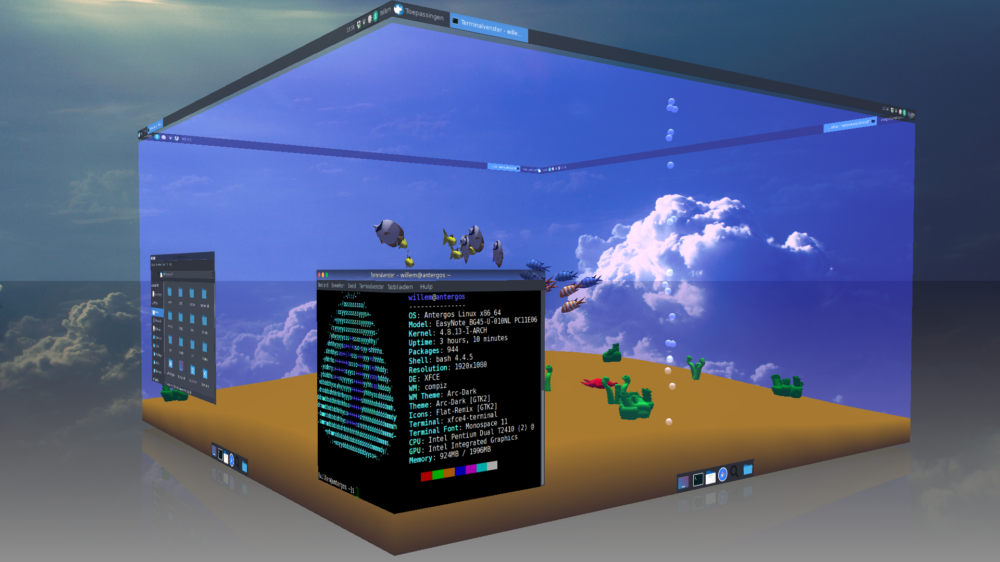
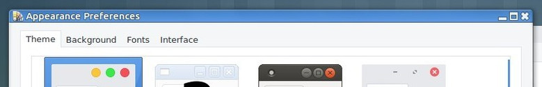
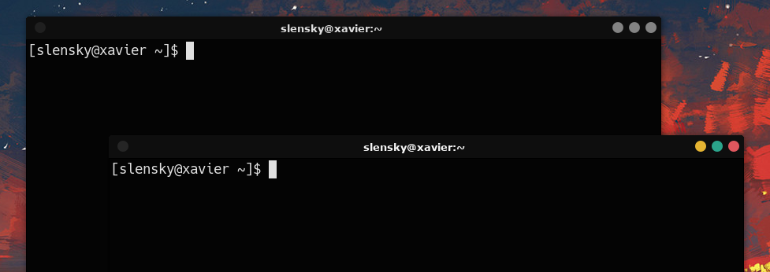

TL;DR: Use gtk-window-decorator instead of emerald and theme it using marco
For those who don't know, Compiz is (or was) an extremely popular window manager and 3D compositor for X11 on Linux. At the height of its popularity in the early-mid 2000s, Compiz's jaw-dropping 3D effects served to show everyone what the Linux Desktop™ was truly capable of.
 The Compiz desktop cube in all of its glory. Would it be better or worse if I also told you it supported 3D using those old red and blue 3D glasses?
X11, originally a protocol intended only to display simple rectangular windows, was not in any way designed to support the eye-catching effects of Compiz. As a result, Compiz's original codebase was built on years of hacks, duct tape, and prayers, and to be honest I think it's a miracle that it runs on modern Linux configs at all. Though a few lone developers still patch the occasional bug in the original 0.8.x codebase (Compiz Reloaded), development has for the most part stopped. Few people still care about Compiz at all, and most who do have long since moved on to the 0.9.x rewrite. Unfortunately, this new version is lacking a number of the purely aesthetic features (not useful ones, to be clear) of the 0.8.x branch.
It should be obvious, then, why I was so sad when Compiz began crashing irrecoverably on my system while pressing Alt+Tab to switch windows.
As documented here and here, this crash is related to window decoration, and began happening as a result of a recent but unknown change in the Xorg server. For a while, the fixes in Alekseyt's fork seemed to fix the crash, but after I updated my system recently the static application switcher is causing freezes again. Considering the state of the Compiz's code and my unfamiliarity with it, I wasn't too eager to dive in and try to fix it again myself. Luckily, a solution I hadn't considered before ended up working perfectly.
There are a few ways to decorate windows in Compiz ("decorating a window" is the process of adding borders, buttons, etc. to it), but the only one anyone really uses anymore is called Emerald. Emerald is highly configurable, but, like Compiz, is riddled with bugs. As it turns out, the crash I was experiencing only happens when using Emerald, but before now I hadn't considered the main alternative (gtk-window-decorator). The main reason for this is that there is no easy way to customize its appearance (at least not that I knew of) and it looks like this by default:
 Not the worst, but that titlebar does a look a little dated.
Luckily, I learned today while digging through gtk-window-decorator.c that it actually has some limited support for Marco themes if compiled with a special flag. Marco is the default window manager for the MATE desktop environment, and there are a number of widely available GTK3 themes for it on sites like this. After I putting in a bit of elbow grease modifying this theme, I actually ended up with something that looked pretty nice (and no longer crashed every five minutes...).
 Much better.
Recompile Compiz Reloaded using the --enable-marco and --with-gtk=3.0 flags. I found this easiest to do by modifying the PKGBUILD of the AUR package
Find a nice looking theme on gnome-look.org, and extract it to /usr/share/themes
Change the command in the "Window Decoration" plugin in CCSM to gtk-window-decorator --replace --marco-theme theme-name. Alternatively, you can use gsettings to set the default theme by running the following command (courtesy of the Arch wiki):
$ gsettings set org.gnome.desktop.wm.preferences theme theme-name
At this point, you should be good to go. Free from crashes, you should have all the time in the world to show off your aquarium-themed, wobbly-windowed desktop cube to anyone (and everyone) who will listen.
Best,
Stephan